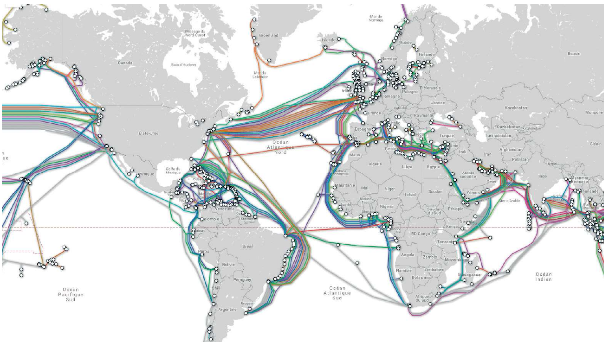
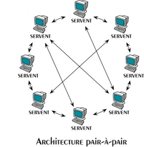

Fixe Accès par câble
- l’ADSL pour le haut débit ;
- la fibre optique pour le très haut débit (plus de 30 Mbit/s).
Chapitre 1 – Internet
Le trafic sur Internet croît de manière exponentielle depuis la mise en place du réseau, en 1969. Le volume du trafic actuel représente l’équivalent de plusieurs dizaines de milliers de films en haute définition par seconde. L’accès peut se faire selon différentes technologies. Le cœur d’Internet repose majoritairement sur l’utilisation de câbles sous-marins.
Consigne : étudie les quatre documents ci-dessous et réponds aux questions qui les accompagnent. Les chiffres ont été mis à jour avec les données les plus récentes (2025-2026).

Sources : TeleGeography, « How Many Submarine Cables Are There, Anyway? » (septembre 2026) et « International Internet Bandwidth » (septembre 2026).
Analysez la carte. Déduisez-en les principaux flux de données sur Internet entre les régions du monde.
Sur le site Submarine Cable Map :
En zettaoctets par an (1 Zo = 1021 octets, soit 1 000 exaoctets ou 1 000 milliards de gigaoctets). Estimations pour 2025 et 2026.
Source : Union internationale des télécommunications (UIT), Facts and Figures 2026, 2025 et 2024 (valeurs issues de plusieurs éditions, susceptibles d’être révisées). Total = fixe + mobile.
| Années | Trafic Internet global |
|---|---|
| 1992 | 100 gigaoctets/jour |
| 1997 | 100 gigaoctets/heure |
| 2002 | 100 gigaoctets/seconde |
| 2007 | 2 000 gigaoctets/seconde |
| 2017 | 46 600 gigaoctets/seconde |
| 2026 (estimation) | ≈ 290 000 gigaoctets/seconde |
Sources : Cisco VNI, 2018 (1992 à 2017) ; 2026 : calculé à partir de l’estimation de l’UIT (9,2 Zo par an ≈ 290 000 Go/s).
En considérant qu’un film en haute définition peut être stocké dans 4 gigaoctets (4 × 109 octets), évaluez l’équivalent en nombre de films par seconde, par jour puis par mois du trafic Internet de 2026. Tracez le graphique de l’évolution du trafic Internet global depuis 1992, en choisissant l’unité de mesure.
La manière d’accéder à Internet évolue rapidement. Selon Médiamétrie, en France, en 2025, le mobile représente 80 % du temps passé sur Internet ; chez les 15-24 ans, ce sont plus de 90 % du temps en ligne. Les Français passent en moyenne plus de 3 heures par jour sur Internet, et près de 5 heures pour les 15-24 ans.
Source : Médiamétrie, L’Année Internet 2025, février 2026.
Part du trafic mobile mondial transportée par la 5G
Le reste du trafic mobile passe par la 4G et les générations précédentes. Chiffres hors accès fixe sans fil (FWA). Source : Ericsson, Mobile traffic forecast (Mobility Report, novembre 2025). 1 exaoctet (Eo) = 1018 octets.
La 4G désigne la quatrième génération de réseaux mobiles : elle propose un accès mobile à Internet à haut débit. La précédente génération, la 3G, ne permettait pas le même débit. La 5G, déployée en France depuis la fin de l’année 2020, permet un accès à très haut débit.
Quel était le trafic de données mobiles mensuel dans le monde fin 2025 ? Comment est-il prévu d’évoluer d’ici 2031 ?
Comment évolue la part de la 5G dans le trafic mobile ? (Comparez-la à la part de la 4G et des générations précédentes.)
Quelles raisons peuvent expliquer que la 5G, déployée depuis 2020, ne transporte encore que moins de la moitié du trafic mobile fin 2025 ?
Un accès à Internet est haut débit lorsqu’il permet d’offrir un débit inférieur à 30 mégabits par seconde. On parle de très haut débit lorsque le débit dépasse 30 Mbit/s. C’est le plus souvent par la fibre optique (fil de verre ou de plastique conduisant la lumière) que l’on atteint ces débits, mais aussi par la 5G pour un accès mobile. L’ADSL, qui utilise les câbles de réseaux téléphoniques, correspond au haut débit.
Le Wi-Fi est une autre technologie radio qui permet de relier localement les ordinateurs et les tablettes à un point d’accès déjà connecté à Internet à haut ou très haut débit. Les câbles sous-marins (par lesquels transitent la plupart des communications) ont des vitesses de plusieurs dizaines de gigabits par seconde.
Source : Arcep, « Marché du haut et du très haut débit fixe », données au 31 décembre 2025 (publication du 12 mars 2026).
Identifiez les technologies que vous utilisez quotidiennement pour avoir accès à Internet. Classez-les dans deux colonnes : haut débit · très haut débit.
| Haut débit | Très haut débit |
|---|---|
Les réseaux pair-à-pair (peer-to-peer) permettent de partager toutes sortes de données (documents, films, jeux, etc.) réparties sur des machines participant à un même réseau (les pairs). Une machine obtient la liste des adresses IP des autres machines qui stockent des fragments de la donnée voulue. Elle télécharge les fragments en parallèle depuis les autres machines. Chaque machine joue à la fois le rôle de client et celui de serveur.

Les réseaux pair-à-pair, souvent utilisés pour partager des données illégales, sont surveillés par l’organisme Hadopi, devenu l’Arcom depuis le 1er janvier 2022 (fusion avec le CSA).
Internet est le réseau informatique mondial qui permet à de nombreux services de fonctionner, notamment le Web ou encore les réseaux sociaux.
Différentes technologies permettent d’accéder à Internet :
Le Wi-Fi relie un ordinateur à une machine qui possède déjà un accès à Internet.
Au cœur d’Internet, ce sont majoritairement des câbles sous-marins transocéaniques qui font passer les données sur des fibres optiques, à des débits 100 à 1 000 fois plus importants que ceux utilisés dans les maisons.